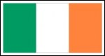

| Show 04 August 2010 |
|
Eurovision Song
Contest with Radio International and on Oikotimes.TV
 Eurovision Song Contest Interview - Chiara (Malta 1998, 2005, 2010): During
last weekend JP, Lilian and Eric were in Stockholm for a huge
Eurovision Event where we interviewed many artists. These interviews
will be broadcast in the course of the coming weeks. But today we start with Malta's Chiara who - as we know - represented Malta three
times at the Eurovision Song Contest: "The one that I love" in 1998 becoming 3rd, "Angel" in 2005 becoming 2nd and then in 2009 "What if we"
placed Malta at Number 22. Listen to the latest interview during this
week's edition of Radio International where Chiara tells us some very
interesting information. Not to be missed. :) Eurovision Song Contest Interview - Chiara (Malta 1998, 2005, 2010): During
last weekend JP, Lilian and Eric were in Stockholm for a huge
Eurovision Event where we interviewed many artists. These interviews
will be broadcast in the course of the coming weeks. But today we start with Malta's Chiara who - as we know - represented Malta three
times at the Eurovision Song Contest: "The one that I love" in 1998 becoming 3rd, "Angel" in 2005 becoming 2nd and then in 2009 "What if we"
placed Malta at Number 22. Listen to the latest interview during this
week's edition of Radio International where Chiara tells us some very
interesting information. Not to be missed. :)
 Euro Friend Song Contest 2010 - HEAT 2 - The Qualifiers: Radio International in collaboration with the Euro Friends Song Contest announces during the show this week the ten qualifiers of HEAT 2 of
what the international juries have been voting for on the Face Book
Page of the contest. Members of the international jury could vote for their ten favourite songs in the Eurovision
Song Contest amongst the second hundred songs of Europe's biggest music
competition. Two weeks ago Radio International revealed the ten
qualifiers of HEAT 1 and now HEAT 2 is closed and the results are being
announced during the show by Andy Simon, who
is one of the prime organiser of Euro Friends Song Contest 2011. Heat 3
will start very soon and you can join to vote for your favourite
Eurovision songs by clicking on this link which takes you to the Face Book Page of the contest. Remember, you have to be a member in order to join the voting on that Face Book Page. Euro Friend Song Contest 2010 - HEAT 2 - The Qualifiers: Radio International in collaboration with the Euro Friends Song Contest announces during the show this week the ten qualifiers of HEAT 2 of
what the international juries have been voting for on the Face Book
Page of the contest. Members of the international jury could vote for their ten favourite songs in the Eurovision
Song Contest amongst the second hundred songs of Europe's biggest music
competition. Two weeks ago Radio International revealed the ten
qualifiers of HEAT 1 and now HEAT 2 is closed and the results are being
announced during the show by Andy Simon, who
is one of the prime organiser of Euro Friends Song Contest 2011. Heat 3
will start very soon and you can join to vote for your favourite
Eurovision songs by clicking on this link which takes you to the Face Book Page of the contest. Remember, you have to be a member in order to join the voting on that Face Book Page.
Eurovision Song Contest Spotlight - Ireland with Dermot Manning: This
week the Radio International Irish Voice returns to the airways and
cyber waves. Dermot takes a Eurovision looks back at two years of the
Eurovision Song Contest , 1988 and 1993 which
were held in Ireland. He will tell us all the stories behind these
contests and also selected some songs from those two years plus more. Enjoy this trip back into the dungeon of the Eurovision Song Contest! :)
 Eurovision News. Luke
Fisher joins us on a weekly basis to supply us with the latest
happenings in the world of the Eurovision Song Contest. Eurovision News
is available on www.eurovision.tv,
oikotimes.com,
esctime.com, escdaily.com, esctoday.com and escflashmalta.com. Eurovision News. Luke
Fisher joins us on a weekly basis to supply us with the latest
happenings in the world of the Eurovision Song Contest. Eurovision News
is available on www.eurovision.tv,
oikotimes.com,
esctime.com, escdaily.com, esctoday.com and escflashmalta.com.
This
is
just
a
selection. Go to www.oikotimes.com
for detailed information.
Eurovision Quiz: Scratch your heads and bite your
nails at our weekly Eurovision
Song Contest Quiz. Good luck and win a copy of a past
Eurovision Song
Contest Final on DVD. All you have to do is to identify the five
clips with Artist, Song, Country and Year. Send your answers
via
the website's CONTACTs page. As long as stock last you can also select something out of the Eurovision 2010 Goodies Bag.
 EurovsiOradio - Quiz: Our colleaguesof www.eurovisiOradio.eu giving away the CD singles of Thea Garrett who was Malta's entry at this year's Eurovision Song Contest and also a CD of Vukasin Brajic from Bosnia & Herzegovina of this year. To go into the draw and win the above items all you have to do is to answer the following question and enter your answer on a CONTACT Form of www.eurovisiOradio.eu. EurovsiOradio - Quiz: Our colleaguesof www.eurovisiOradio.eu giving away the CD singles of Thea Garrett who was Malta's entry at this year's Eurovision Song Contest and also a CD of Vukasin Brajic from Bosnia & Herzegovina of this year. To go into the draw and win the above items all you have to do is to answer the following question and enter your answer on a CONTACT Form of www.eurovisiOradio.eu. The question is: "Which of the following two countries received a better result at the 2010 Eurovision Song Contes: Bosnia & Herzegovina or Malta?" - Good luck!
Eurovision Song
Contest Calendar of Events:
Check out a
detailed listing of all events scheduled around
Europe. If you hear of something we have not listed please drop us a
line by clicking here and let us know. After Eurovision is before
Eurovision and to bridge the Eurovision Gap many Eurovision Clubs will
be holding their annual convention.
Upcoming Events:
04 Sep 2010 - Eurovision Cruise by OGAE Finland. More details - here.
11 Sep 2010 - International Eurovision Party in Setubal/ Portugal
09 Oct 2010 - OGAE Croatia's Rock Me ZG 2010
16 Oct 2010 - EUROBASH
2010 in Manchester, OGAE UK
30 Oct 2010 - OGAE Luxembourg Gala(details to come soon)
06 Nov 2010 - Eurovision Club (EC) Germany's Annual Convention
Eurovision Song Contest Interviews the Radio
International Team has done with the Eurovision performers can be heard
by visiting our Eurovision
section of this website or check out the Radio International
goes.... part of the website.
Eurovision Music requests as well as other music
requests are most welcome and can be done via our website's CONTACT US page. Let us know what you want to hear
and where you are from. Due to
the large number of requests
we received and cannot accommodate this week these requests will be
added to the play list for the
future shows.
|
|||||
| < Prev | Next > |
|---|